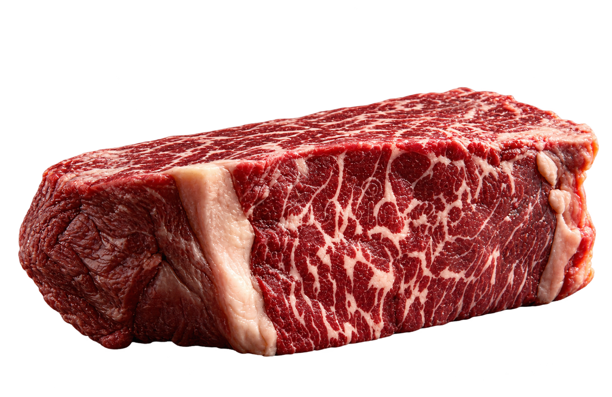
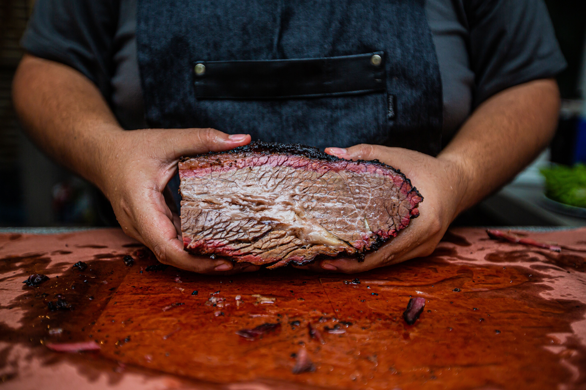

Se o seu médico recomendou cortar 100% da gordura da sua vida, mude de médico ou traga ele aqui para comer um Tomahawk com a gente. A vida é curta demais para comer carne com textura de folha de papel.
Energia de verdade. "A gordura natural das carnes é uma fonte de energia densa e limpa que o corpo humano usa desde a época das cavernas, muito antes de inventarem o óleo de soja."
• Amiga dos Hormônios. "As gorduras saturadas naturais e o colesterol bom servem como base para a produção de hormônios essenciais no nosso corpo. Cortar totalmente a gordura da carne pode te deixar sem energia e com o humor péssimo."
• O Sabor é Fundamental. "O famoso 'marmoreio', que é aquela gordura entremeada na carne, é o responsável por dar a maciez e o sabor único ao churrasco. Comer carne totalmente sem gordura devia ser considerado um crime contra a gastronomia."
A indústria alimentícia passou décadas tentando te convencer de que um bife seco, cinzento e grelhado sem uma gota de gordura era o segredo da longevidade. O resultado? Uma geração de pessoas tristes que mascam peito de frango com textura de borracha enquanto sonham com uma costela gorda. A gordura não é a vilã; o vilão é quem inventou o bife sem graça.
A gordura animal premium cria uma barreira psicológica e gastronômica impenetrável contra a ditadura do alface. Cientistas (da nossa própria cabeça) comprovam que o cérebro humano, ao saborear a crosta perfeitamente dourada e gordurosa de um bife de Chorizo, anula instantaneamente qualquer desejo de consumir hambúrgueres feitos de ervilha e mistérios industriais.
O verdadeiro ouro de um açougue premium se chama marmoreio — a gordura intramuscular que derrete durante o preparo e lubrifica as fibras da carne. Comer uma carne com alto teor de marmoreio não é apenas alimentação, é um evento de engenharia térmica. Sem essa gordura, você não está fazendo um churrasco, está apenas aquecendo matéria orgânica seca.
